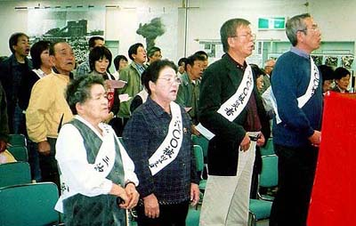

ー ２００３．１１．１６ 三池ＣＯ現地共闘会議主催「第４０回三池大災害抗議集会」 ー
（資料提供：三池大災害原告団員 織田喬企氏）
事務局 熊本県荒尾市
ー ２００３．１１．１６ 三池ＣＯ現地共闘会議主催「第４０回三池大災害抗議集会」 ー
（資料提供：三池大災害原告団員 織田喬企氏）
昭和３８年１１月９日
三井三池炭鉱三川鉱大爆発９日午後３時１０分頃、大牟田市三川町 三井三池鉱業所三川鉱の第一斜坑の坑口から約５００メートルの坑道で大爆発が起きた。 坑内には爆発当時１２２０余人がおり、うち４００人が脱出したが、結局、死者４５８人、一酸化炭素中毒者約８３９人という日本 炭鉱史上２番目の大惨事となった。爆発の瞬間、坑内から青い火と黒煙が坑外に吹き出し、爆音は数キロ離れた所まで響き渡った。 死因の内訳は、爆死２０人、ガス中毒死４３０人だったという。
緑ケ丘、大谷、万田などの九つの社宅には棺が次々に帰って来、朝になっても誰も動こうともしなかった。そして、それは被災者 家族の長い闘いのはじまりでもあった。爆発直後、大牟田医師会は、医師会員を足止めし、収容可能なベッド数を調査確保して、三井鉱山に対し援助を申し入れたが、 三井鉱山は「労災との関係で患者を会社の管理下に置きたい」という思惑からこれを拒否。患者の治療はさらに後手後手となっていった。
昭和３８年１１月１１日
厚生省は三井三池の炭鉱爆発事故による負傷者の中に、一酸化炭素中毒で呼吸困難や意識不明と なっている患者がかなりいるので地元の対策本部からの要請により、九州地区の国立病院から血液、 精神科関係の医師数人を現地に派遣することに決めた。昭和３８年１１月１８日
治療当時は全く症状がなく元気だった人たちの中に、数日経ってから症状が出たり、一度退院した のち再発入院する人が目立ちガス中毒に新たな問題を投げかけている。昭和３８年１１月１９日
事故による中毒患者１６０余人を収容している大牟田市の三井鉱山天領病院は、４人の患者を「中 毒性精神病」と認め、久留米大学付属病院精神科病棟に移し保護室で治療を続けることになった。今 度の事故で精神病院に収容されたのは初めてである。昭和３８年１２月５日
恐ろしい一酸化炭素中毒 後遺症が最大の問題 厚生省 調査団を三川鉱へ
後遺症患者には半身不随、けいれん、精神不安定、ヒステリー症のほか、いつ回復するかわからな い記憶喪失者もいる。三川鉱事故での入院患者はすでに何らかのこうした後遺症を持っている。 入院患者２８４人のうち、意識不明の状態を続けている者４人、意識はあっても精神障害を起こし ている者が１８０人程いる。この内、痴呆状態にある者約５０人、物忘れしやすい者が約１３０人と なっている。昭和３８年１２月２７日
三井三池鉱災害 医療調査団が報告 「後遺症に長期治療を」昭和３９年１１月８日
爆発事故により一酸化炭素中毒にかかり治療を受けている三川鉱の鉱員約４００人のうち、５６人 が一年振りに全快、初めて集団で職場復帰することになり、７日三川鉱坑内を見学した。昭和３９年１２月１日
労働省指導により荒尾職能回復指導所を開設。三井鉱山職員が訓練指導員になったため組合側から反発が起こった。 また、訓練とは名ばかりで、主として体育的訓練がおこなわれたに過ぎなかった。昭和３９年１２月２８日
労働基準監督局は、ガス中毒被災者に対して、治療を打ち切り万田訓練所へ入所せよと通告。昭和４０年３月２４日
ＣＯ中毒患者・家族の会結成。昭和４０年４月３０日
大牟田労災病院は入院中のガス中毒患者（三池労組９名、新労組９名、職組５名）に対し退院通告。昭和４０年１２月２３日
同じくガス中毒患者４３名に対し退院通告。退院期日を昭和４１年１月１０日と指定。これを拒否した三池労組側患者はリハビリ 治療を中止された。昭和４０年１２月２７日
労働大臣に対して「ＣＯ中毒患者治療についての労働省に対する要請書」を提出。ＣＯ被災労働者援護措置法(ＣＯ特別立法)の 成立まで治癒認定=障害等級決定の凍結を要求した。昭和４１年６月２６日
第５１回通常国会最終日、ＣＯ特別立法成立まで療養の打ち切りを行わないことなどの決議と覚書がなされた。昭和４１年８月１３日
三川鉱大爆発の責任追及に自信を持って取り組んでいた福岡県警であったが、三井鉱山の起訴に積極的であった福岡地方検察庁 検事正や検事が異動させられ、県警刑事部長も中途退官させられて、三井鉱山は不起訴処分となり、４５８名の死者と８３９名の ＣＯ中毒患者を発生させた三井鉱山の刑事責任は不問に付された。その不起訴理由の一つが、１人の命よりも、「三井の社会的貢 献度」を優先したという。昭和４１年１０月２６日
三池医療委員会は「大多数の者は他覚的所見がほとんど認められないのに、現在なお種々の自覚症状を訴える多くの患者が いるのはおかしい。三池労組の指示で病気を装っているのではないか」といった、いわゆる悪名高い「組合原生病」（働かな いで収入をうるといったニセ病）という診断を下し、会社側はこの意見書をもとに患者側に対し職場復帰を通告してきた。昭和４１年１０月３０日
先の通常国会における覚書は無視され、７３８名に対して労災補償給付打ち切り(治癒認定)の通告がなされた。その通告の 根拠は、１０月２４日付け三池医療委員会意見書であり、政治に利用された。これを受けて三井鉱山も「治った人は会社の指揮下 に入ること、特別補償は打ち切る、今後の医療は私傷病扱いにする、すでに定年になった人は１０月３１日以降は退職扱いにする」 を申し入れ。
新三池労組はこの申し入れを受け入れたが、新労組合員の患者及び家族は「治らないからさらに診療を続けてほしい」と審査 請求を求め、その数は新労だけでも１２５名にのぼった。昭和４１年１１月２４日
政府は労災補償給付打ち切りを撤回。審査請求に対する再検診を実施。その結果、三池労組所属の通院患者の中に入院の必要な 者１６名、新労に属する９３名のうち５５名が職場復帰は不可能、という結論に達し、大牟田労災療養所医師たちの診察結果がく つがえされた。昭和４２年１月１９日
これに対し、大牟田労災療養所の医師全員（６名）が前代未聞のサボタージュを実施。入院中のガス中毒患者は「組合原生病 (ニセ病)」だとして職場を放棄。給食打ち切りを行うとともに、「ここにある聴診器一つ、注射一つも病院のものだからあなた方 に対しては使えない。」と三池労組・社会党に対し、露骨に敵意をむき出して即刻退院を迫った。当然、ＣＯ患者の家族の会など は療養所内で抗議の座り込みをはじめた。会社直系病院の医療倫理が問われた事件であった。昭和４２年７月１５日
CO中毒患者救済特別立法を求め 患者家族の会ら７５名 三川鉱坑道に座り込み １４４時間昭和４２年７月２１日
炭鉱災害による一酸化炭素中毒症に関する特別措置法、成立。しかし、患者家族の最低限の要求である「完全治療」「前収入 の補償」「解雇制限」は明文化されなかった。昭和４２年９月２８日
２８日午前５時頃、大牟田市西港町 三井三池三川鉱坑内で火災が発生。二百数十人がCO中毒、死者６、不明１。無理な採炭たたる。昭和４３年１月７日
三池労組一酸化炭素中毒患者家族と遺族会の主婦２９人は、３８年炭鉱爆発事故によるCO中毒患者と遺族の取扱についての会社回答 を不満とし、８日朝９時から三池鉱業所前のテントで無期限のハンストに入った。昭和４３年１月２５日
炭労は三井鉱山から提案されていた「ＣＯ患者及び遺族の取扱いに関する協定」に正式調印。三井鉱山は「これでＣＯ問題はすべて 解決した」と宣言。しかし、現実には多くの後遺症をもった患者たちが残され、家族の苦悩や家庭破壊に対する償いは何一つなされな かった。炭労も三池労組も、三井の権力と資力の前に敗れていかざるをえなかった。
多くの患者家族たちは、総評・炭労・三池労組からも裏切られたという思いが募っていった。昭和４３年１月３０日
三井三池鉱に損害賠償請求 CO中毒死者の遺族
炭鉱災害によるCO中毒死の遺族が損害賠償の民事訴訟を起こしたのは全国で初めて昭和４３年３月２２日
４年４カ月ぶりに就労 三池CO中毒者の二百三十余人昭和４３年４月１１日
今度の職場復帰者は２８２人。坑内で１１１人。坑外で１７１人。ほとんどが頭痛や吐き気、手足 のしびれ、物忘れなどの後遺症を訴える。三池ではこうした人たちの他、手足が動かない、口も耳も 不自由といった重症患者と通院したりして機能回復訓練を受けている患者が合わせて９０人いる。 「近い将来、不具者のまま解雇されるのでは・・・」という心配が患者・家族の間でたえず聞かれる。 これからは、企業責任を問うだけではなく、被災者の将来を保障する積極的な政府の対策がほしいー これが関係者の一致した声である。昭和４７年１１月１６日
ＣＯ患者村上正光、松尾修、家族村上トシ、松尾薫虹の２家族４名が「損害賠償請求訴訟が、加害企業の責任追及と補償義務の 履行を迫り、企業の犯罪性を大衆の眼の前に暴露することができる唯一の方法」として、三井鉱山に対し損害賠償請求訴訟を提訴。
すでに「ＣＯ患者及び遺族の取扱いに関する協定」に正式調印していた三池労組はこれに反対した。昭和４８年４月１７日
さらに、ＣＯ患者の大坪金章、大坪ミヤ子、藤末又義、藤末ツギエの４名が松尾らによる損害賠償請求訴訟に合流。昭和４８年４月２０日
損害賠償請求は物取り主義だと松尾らを批判していた三池労組も、損害賠償請求マンモス裁判をおこすことを決定。と同時に、 松尾薫虹さんを「組織決定に従わない者」として組合から除外した。昭和４８年５月１１日
三池労組は遺族とＣＯ患者４２２名を原告としたマンモス訴訟を福岡地裁に提訴昭和４８年６月１日
福岡地裁において「三池ＣＯ裁判」の第一回口頭弁論が開始。原告の意見陳述の中で、松尾さんは「三井は労災補償に肩代りし てもらうだけで、家族の苦しみにたいしては全く償っていない。三井はまず被害者に陳謝せよ」と迫ったが、これに対し三井鉱山 は「原告らがどの程度精神的苦痛を受けたかは私たちは知らない」と冷たくあしらった。昭和４８年１１月９日
三池炭じん爆発CO闘争 やっと法廷
１０年目に口頭弁論開始「会社側が合理化・経費節減により、坑内にたまった炭じんに対する散水・炭粉散布などの安全対策を しなかったため」と事故の原因を強調、続いて遺族やCO中毒後遺症に悩む患者たちの生活実態について陳述した。昭和４９年１月６日
意識不明のまま１０年間 三池ＣＯ中毒患者宮嶋重信さん（３３歳）死す三井三池事故の大爆発以来、CO中毒のため意識が戻らず、”生けるしかばね”として生きた１０年２カ月。宮嶋さんの闘病生活 は全く悲惨なものだった。目も見えず、ものも言えず、耳も聞こえず、最近はすっかりやせ衰え、背中が腐ったようになって、所 々血が噴き出していた。宮嶋さんの両親は、「息子は人間ではなかった。ミイラのようになり、化け物だった。せめて昔の姿で死 なせたかった。この恐ろしさを会社の幹部に見てもらいたかった」と涙を浮かべながら訴えていた。
昭和４９年１１月９日
三池被災者の審査請求、棄却 福岡労基局
４７年２月になって治癒したとされた２３人の組合員２３人のうち、１９人が「性格の変化、目ま い、頭痛などが残っており治癒していない」と、認定を不服として訴えていたもの。昭和５９年１月１９日
三池有明鉱で坑内火災 死者８３人昭和６０年４月２１日
三池三川鉱炭じん爆発賠償訴訟 原告団（４２２人）和解交渉へ昭和６０年８月２１日
「三池」原告団 １３年目の分裂 和解拒否派（３０人）が別組織
和解交渉の受け入れを決めている三池労組（中原組合長）と原告団（約３９０人）は、すでに新原告 団グループを除名しており、約８７億円の損害賠償を求めて提訴して以来、同一歩調をとってきた原告 団は、１３年目で完全に分裂した。昭和６２年７月１７日
三池ＣＯ中毒訴訟原告団 和解案受け入れ １４年ぶり決着 死者４００万円一方、和解を拒否した３２名(沖克太郎元組合長ら)は新しい弁護団と新原告団を結成、ＣＯ共闘会議が全国に組織され、 支援を受けた。
平成４年１２月２６日
三池ＣＯ中毒訴訟は、炭鉱爆発事故から２９年、提訴から約２０年して審理を終えた。判決は、来年３月２６日から言い 渡される予定。平成５年３月２６日
松尾さんら単独組の判決及びマンモス訴訟の和解拒否派３２名に対する判決が下された。 その判決は、三井鉱山の過失責任を認めるとともに、原告全員をＣＯ中毒後遺症と認定した。しかし、家族に対する慰謝料 は認められなかった。松尾さんらは控訴。マンモス訴訟の和解拒否派は控訴せず、三井も控訴しなかったことから判決が確定 した。平成６年８月４日
三池ＣＯ裁判の原告の１人であった松尾修さん死去平成８年３月
三井鉱山は、来年閉山を理由にＣＯ協定を破棄平成８年１１月７日
三池CO協定外泊送迎訴訟を提訴。三池労組がＣＯ協定廃止に合意しても被災者の会は承服できないというもの。平成９年３月３０日
三井三池炭鉱閉山
１９６０年の三池争議を闘い、”日本最強の組合”と呼ばれた三池労組の決起集会が３０日午後、 大牟田市労働福祉会館で行われた。かつて２万人を超した組合員はわずか１５人になったが、芳川勝 組合長（５４）は閉山の日まで旗を守り抜いたことで「私たちは会社に勝った」と目を潤ませながら 総括した。「１５人で最大限、どういう闘いをやるか苦悩してきた」。CO中毒で入院中の組合員に話 が及ぶと、涙で声が詰まった。平成１２年４月１５日
CO患者・家族の実態 M.Sさん（７９歳）「夫は被災当時４６歳。身体は頑強で仕事にも教育にも熱心でした。あの爆発によって被災し、意識 不明のまま三井病院に収容されました。４日目にようやく意識は戻りましたが、トイレに行っても用 便の仕方を忘れているのにがく然としました。満腹感がないのか、見舞いにもらった食べ物なぞ全部 食べてしまうので一時も目が離せませんでした。その後、大牟田労災病院へ転院し、診断書には、物 忘れ、性格変化、失見当識、知能低下、意欲低下、記憶力障害、記銘力障害などがあり、常時介護が 必要と記されました。・・・被災当時の生活実態は、高１の長男をはじめ、小４、小２の男の子と、 年老いた父親をかかえた生活は大変でした。・・・夫は、被災前は親を非常に大切にしていましたが、 「年寄りは早く死ね」と本気で怒って言うので、私は大変心配していましたが、その父親も８５歳で 亡くなりました。・・・夜はベッドにくくりつけられ、昼間は椅子にくくられているという生活の中 で、本人はなぜ自分が不自由にさせられているのかが理解出来ないのです。私も腰の手術以降は歩く ことも不自由です。・・・CO協定が破棄され、送迎までも打ち切られたことは納得がいきません。会 社は最後まで責任を持つのは当然です」（三池ＣＯ被災者の会ニュースから抜粋)
平成１２年４月２５日
三池ＣＯ協定外泊送迎訴訟、福岡地裁、勝利判決。その内容は、
① ＣＯ協定廃止を会社と三池労組は合意をしたが、ＣＯ被災者の会は認めていな いので、会社とＣＯ被災者の会の間ではＣＯ協定は存続している。したがって、 ＣＯ患者の外泊送迎をこれまで通り会社が行うこと
② 三井鉱山と三井石炭は連帯責任がある
というもの。
三井側は判決で支払いが命じられた金の内、過去の分の一時金２５０万余円を判決当日に支払った。
しかし、三井側は控訴。原告団も「ＣＯ患者の付添人費用請求を認めよ」として控訴することになり、 今後は福岡高等裁判所に舞台をかえて裁判が続けられることになった。平成１３年１１月１５日
同日、三池ＣＯ協定外泊送迎裁判の福岡高裁判決公判が開かれ、一審判決（福岡地裁）と同じく原告勝訴が言い渡された。 しかし、三井鉱山福岡支店は支店長不在を理由に原告団が申し入れた「謝罪」等の要求に対して具体的な回答を示さなかった。平成１５年１１月
三池ＣＯ被災者の会から、支援組織であった全国ＣＯ共闘会議が分離。今後、抗議集会も別々に行われることになった。
その経過は別添ページのとおり。平成１５年１１月１７日
三川鉱炭じん爆発事故４０年 ＣＯ患者家族ら抗議集会
大牟田市の三井三池三川鉱で起きた炭じん爆発事故から４０年を迎え、三池ＣＯ現地共闘会議主催の「第４０回三池大災害 抗議集会」が１６日、熊本県荒尾市のあらおシティモールであった。
 一酸化炭素中毒患者の家族、支援者ら約２５０人が参加。炭じん爆発事故の犠牲者や死亡したＣＯ中毒患者らに黙とうした 後、患者家族を代表して、塚本ミスエさん(７６)が決意表明。「ＣＯ中毒患者になった夫を抱え、一日も心が安まることが なかった。今後も仲間と手を取り合い、闘いたい」などと述べた。
爆発事故当時の状況や裁判の歴史などをまとめたビデオ上映などもあった。(熊本日日新聞)